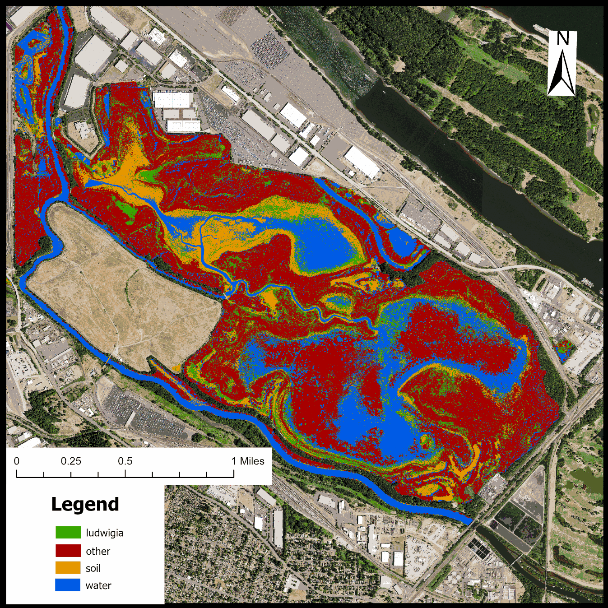
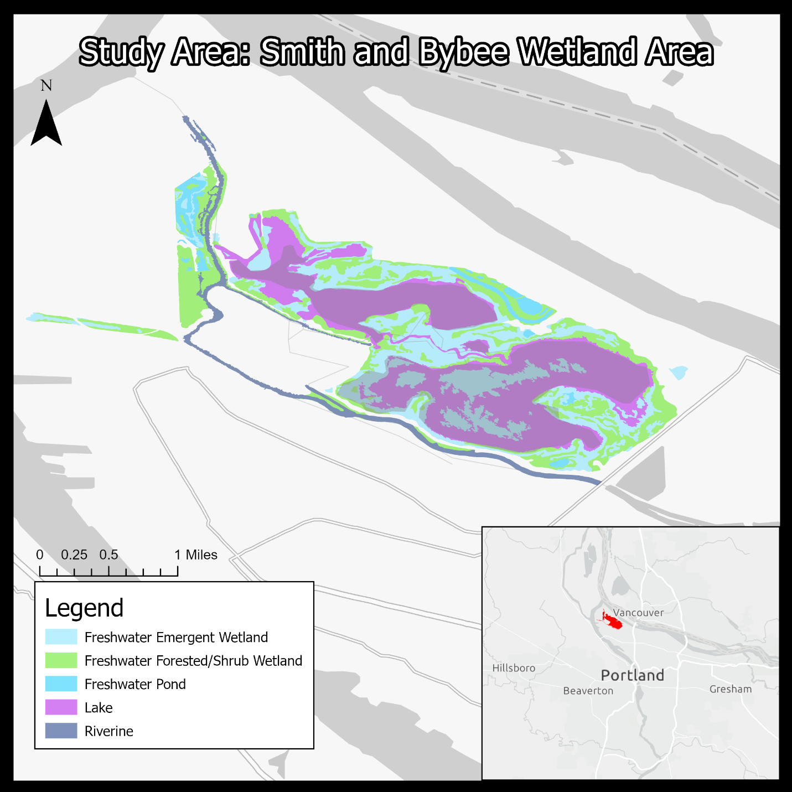
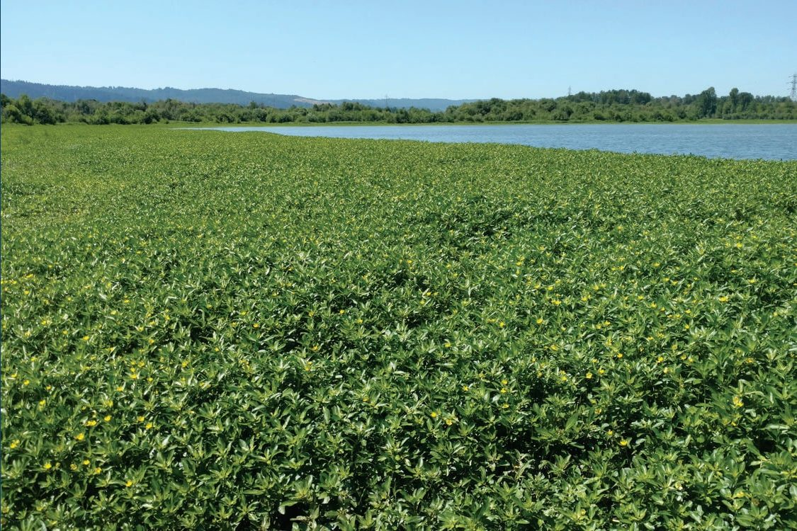
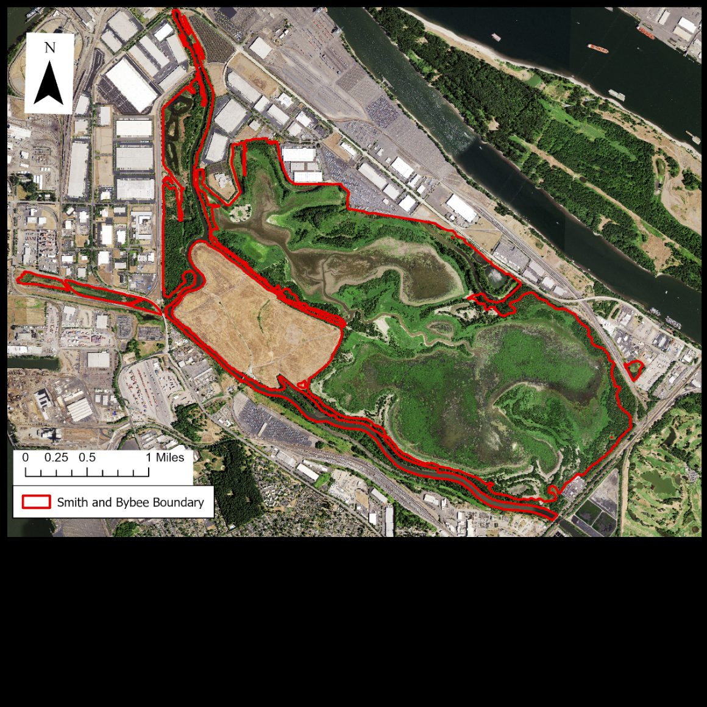
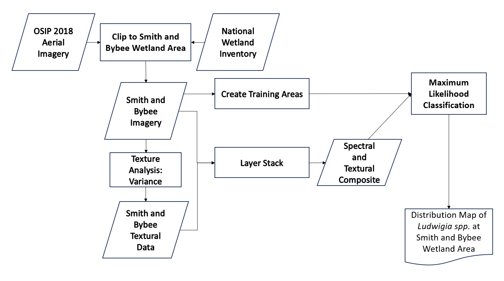
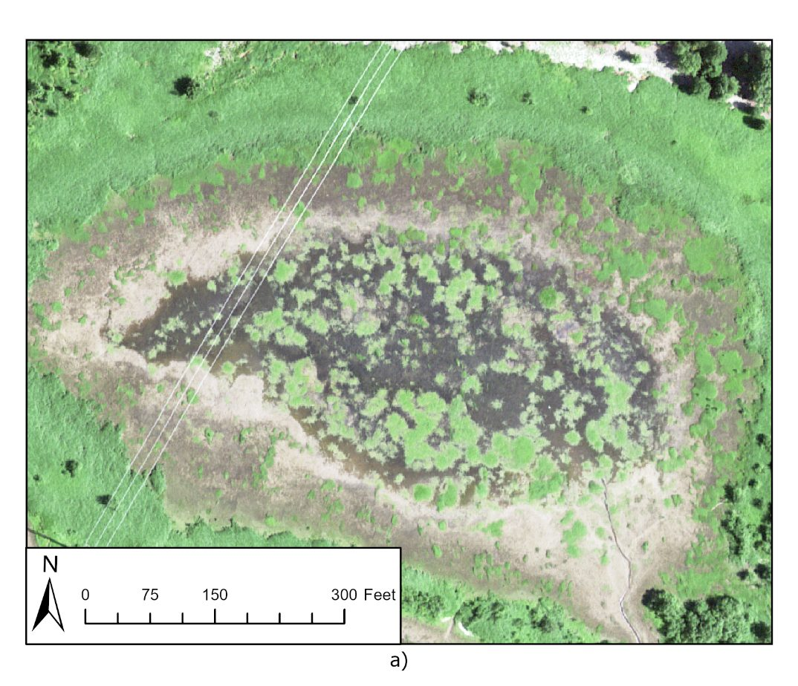
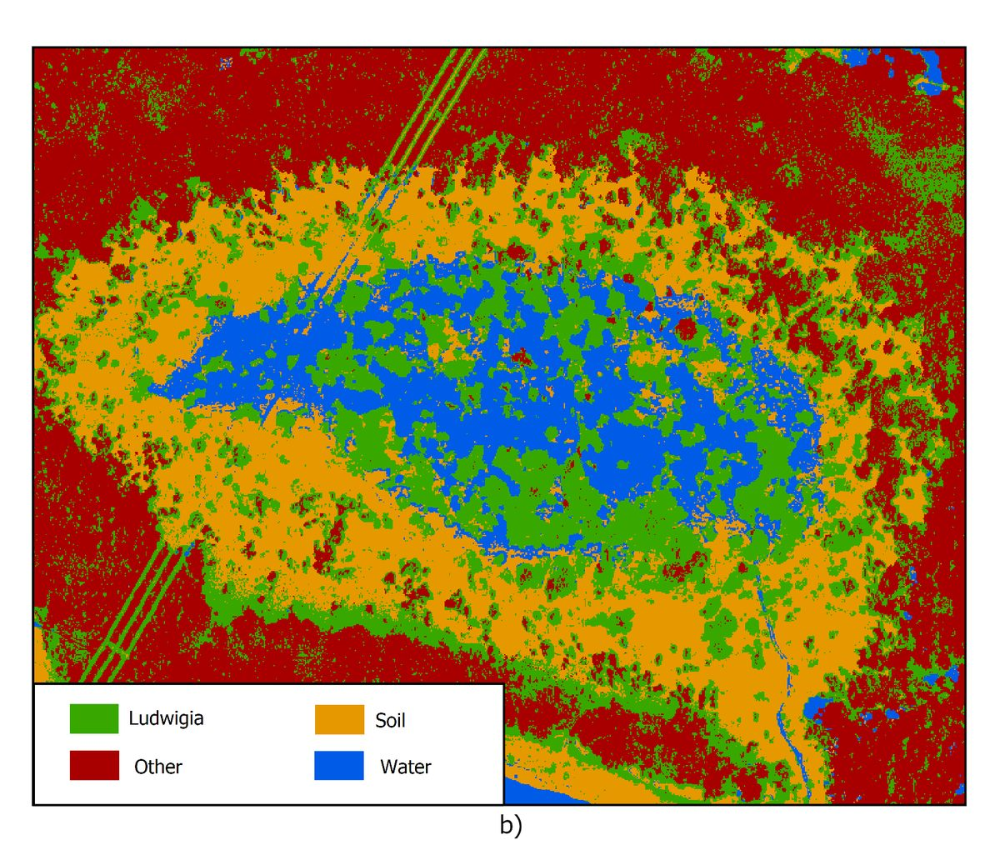

M.S. Research · Remote Sensing & GIS
Finding LudwigiaMapping an invasive water primrose from the air, one green pixel at a time.
Identifying Ludwigia spp. using maximum likelihood classification: a case study for the Smith and Bybee Wetland Natural Area, Oregon.

A repeatable way to find an aggressive wetland invader using free imagery and off-the-shelf GIS.
This study applies remote sensing to map invasive water primrose (Ludwigia spp.) across the Smith and Bybee Wetland Natural Area in Portland, Oregon. Using freely available 2018 aerial imagery from the Oregon Statewide Imagery Program (OSIP) and a maximum likelihood classifier run in widely available software, it produced a four-class land-cover map that identified Ludwigia with an overall accuracy of 89.2% and a kappa statistic of 0.856.
The method was designed to be replicable. It runs on standard computing systems with accessible tools and imagery, giving wetland managers a workflow they can adapt for localized invasive-species monitoring rather than a result that depends on specialized infrastructure.
Introduction
Background
Invasive plants pose a substantial and growing threat to ecosystem stability worldwide, presenting a persistent challenge for conservationists and land managers. Ranked as the second greatest threat to biodiversity after habitat fragmentation, invasive species jeopardize native plant communities by monopolizing essential resources including light, space, and nutrients. Beyond direct competition, they can alter fundamental ecosystem processes such as fire regimes, hydrology, and nutrient cycling, reducing an ecosystem's resilience to external pressures (Khanna et al. 2011). These cascading effects extend to wildlife populations that depend on native plants for food, shelter, and reproduction, potentially driving population declines or local extinctions (Dandelot et al. 2005). Invasive species also carry significant economic consequences for forestry, agriculture, and fisheries through competitive displacement of desired species and interference with transportation infrastructure (Ade et al. 2022).
Many invasive species share high growth rates and reproductive output, allowing them to establish dominance rapidly in the absence of natural predators, pathogens, and competitors. In aquatic systems, Ludwigia spp. (water primrose) exemplifies this pattern: it can double in biomass every two weeks, forming dense floating mats that disrupt water flow, reduce dissolved oxygen, block sunlight, and elevate water temperatures. These conditions degrade habitat for native aquatic flora and fauna (Dandelot et al. 2005). In terrestrial environments, species such as reed canary grass alter soil chemistry and form dense thickets that exclude native seedlings from sunlight, producing monocultures detrimental to biodiversity (Metro 2012).
Without effective monitoring, the impacts of invasive species will only continue to proliferate.
The need for scalable detection has elevated the role of remote sensing in invasive-species management (Parker et al. 2021). Remote sensing enables large-scale ecosystem monitoring, providing spatially explicit data that supports both the classification and the management of invasive populations. Platforms including multispectral (Alvarez-Taboada et al. 2017) and hyperspectral sensors (Khanna et al. 2011), as well as unmanned aerial vehicles (Mafanya et al. 2018), have expanded the toolkit available for environmental monitoring. These systems capture data beyond the visible spectrum, allowing analysis of the spectral signatures unique to different plant species and helping identify invasive populations across varied landscapes.
Applying these technologies to invasive-species classification is not straightforward. Spectral and textural similarities between invasive and native vegetation (Alvarez-Taboada et al. 2017), intraspecific phenotypic variability (Hestir et al. 2007), the absence of high-resolution distribution models (Diao and Wang 2014), and the complexity of heterogeneous ecosystems (Vanonckelen et al. 2013) all present hurdles to accurate classification. Parker et al. (2021) further emphasize the need for stronger collaboration between remote-sensing researchers and field practitioners, to bridge the gap between methodological development and operational application.
Research objective
The objective of this study is to apply remote-sensing methods to the classification and mapping of invasive Ludwigia spp. within the Smith and Bybee Wetland Natural Area, Portland, Oregon. The project uses the Oregon Statewide Imagery Program's (OSIP) 2018 aerial multispectral imagery to identify the species through maximum likelihood classification (MLC), a supervised learning approach. It tests MLC's effectiveness using widely available software (ERDAS Imagine and ArcGIS Pro) and freely accessible imagery, with the goal of giving wetland managers a replicable methodology that can be executed on standard computing systems and adapted for localized invasive-species monitoring.
Literature Review
Classification in diverse ecosystems
Classifying invasive species in heterogeneous landscapes is complicated by the variability of spectral and textural properties across vegetation types, and by the co-occurrence of multiple species within a single pixel or image object. Laba et al. (2007) applied fuzzy-set analysis to high-resolution QuickBird satellite imagery to map invasive wetland plants in the Hudson River National Estuarine Research Reserve, improving classification accuracy by roughly 10% over standard maximum likelihood approaches.
Vanonckelen et al. (2013) assessed how atmospheric and topographic corrections affect land-cover classification accuracy in the Romanian Carpathians, a mountainous environment where terrain-induced illumination differences complicate spectral analysis. Applying transmittance functions for atmospheric correction and a pixel-based Minnaert correction for topographic adjustment improved differentiation among land-cover classes and reduced spectral overlap, yielding an accuracy improvement of about 7%. Hestir et al. (2007) similarly demonstrated the value of preprocessing for hyperspectral imagery: using logistic-regression models and binary decision trees that incorporated spectral mixture analysis, spectral angle mapping, band indices, and continuum removal, they achieved producer accuracies of 59.2% to 63.0% and user accuracies of 69.1% to 92.1% in the California Delta. Together these studies underscore the importance of tailoring preprocessing and classification to the specific spectral and environmental characteristics of a study area.
Biological challenges
Biological complexity introduces its own difficulties. Khanna et al. (2011) encountered phenotypic variability among aquatic species including water hyacinth, pennywort, and water primrose, which produced diverse spectral responses within a single species. They addressed this with hyperspectral methods, including spectral angle mapper and linear spectral unmixing in a decision-tree framework, classifying species by biophysiological differences. Hestir et al. (2007) likewise stressed the importance of accounting for spectral variation driven by plant phenology when identifying invasive vegetation.
Other researchers have tackled genus-level discrimination with different sensor and classifier combinations. Ade et al. (2022) used random-forest classifiers with Sentinel-2 multispectral data to differentiate invasive aquatic vegetation genera with high accuracy. Laba et al. (2007) combined maximum likelihood classification with fuzzy-set analysis for multispectral QuickBird imagery in tidal wetlands. Diao and Wang (2014) built a fine-scale species distribution model for saltcedar by integrating environmental variables with logistic regression and spatial autocorrelation analysis. Collectively, these studies show that classification accuracy depends on matching the classifier and input data to the biological and spectral characteristics of the target species.
Imagery sources
Multispectral imaging captures data across several spectral bands beyond conventional red, green, and blue, typically including near-infrared and sometimes shortwave infrared. This expanded range allows vegetation types to be told apart by their reflectance. Alvarez-Taboada et al. (2017) applied multispectral imaging from both UAV and WorldView-2 platforms to map Hakea sericea, and Ade et al. (2022) used Sentinel-2 data for genus-level mapping of invasive aquatic vegetation, showing the technology's capacity for finer taxonomic distinctions in complex ecosystems.
Hyperspectral imaging captures hundreds of narrow, contiguous bands, providing detailed signatures that reveal subtle biophysical differences among species. This resolution is particularly effective where species share superficially similar reflectance (Ramsey et al. 2005; Hestir et al. 2007; Khanna et al. 2011). Ramsey et al. (2005), Hestir et al. (2007), and Khanna et al. (2011) each used hyperspectral data to map invasive floating aquatic macrophytes such as water hyacinth. Khanna et al. (2011) employed spectral angle mapper and linear spectral unmixing in a decision-tree format, effective across variable conditions over several years, while Diao and Wang (2014) combined multispectral satellite imagery with aerial hyperspectral data for finer-scale classification. Parker et al. (2021) note that pairing hyperspectral imagery with LiDAR can improve accuracy further, though accounting for phenological spectral variation remains a challenge (Hestir et al. 2007).
Unmanned aerial vehicles (UAVs) with digital cameras can rapidly generate orthomosaics at high spatial and temporal resolution, offering a cost-efficient alternative to airborne and spaceborne platforms (Alvarez-Taboada et al. 2017; Mafanya et al. 2018). Their flexibility in acquisition timing and resolution often exceeds what satellite and manned platforms can match, though preprocessing and radiometric calibration remain obstacles. Alvarez-Taboada et al. (2017) used UAV and WorldView-2 imagery to quantify Hakea sericea cover using multispectral bands and textural features, and Mafanya et al. (2018) demonstrated the importance of radiometric calibration for large-scale UAV mapping of Harrisia pomanensis, using a grey-scale calibration framework to improve consistency across varying illumination.
Common classification methods
Maximum likelihood classification (MLC) is a parametric supervised technique that assigns each pixel to the class with the highest probability of membership, assuming Gaussian-distributed spectral values within each class. It is widely used in land-cover mapping and has been applied to invasive-species detection. Laba et al. (2007) applied MLC to QuickBird imagery for mapping invasive wetland plants, achieving overall accuracies of 64.9% to 73.7% across 20-class maps, which fuzzy-set analysis improved to 75% to 83%. The method performed poorly in areas of spectral confusion, such as intertidal zones where soil and water are hard to distinguish.
Object-based image analysis (OBIA) segments imagery into spatially contiguous clusters based on both spectral and spatial characteristics, classifying at the object level rather than pixel by pixel. This reduces the noise inherent in pixel-based classification and suits high-resolution imagery well. Alvarez-Taboada et al. (2017) applied OBIA with vegetation and texture indices to map Hakea sericea, reaching 93% accuracy with WorldView-2 imagery and 75% with UAV imagery.
Spectral angle mapper (SAM) classifies pixels by the angular distance between spectral signatures, which makes it relatively insensitive to illumination variation. Khanna et al. (2011) integrated SAM with spectral unmixing in the Sacramento–San Joaquin River Delta, achieving accuracies of 88% for water hyacinth, 87% for pennywort, and 71% for water primrose. Hestir et al. (2007) combined SAM with spectral mixture analysis and logistic regression for 93.3% accuracy on water hyacinth. Both studies also incorporated continuum removal and vegetation indices such as NDVI and red-edge index.
Methodology
Study area
The Smith and Bybee Wetland Natural Area in Portland, Oregon is a significant urban wetland complex spanning roughly 2,000 acres. It encompasses the interconnected Smith and Bybee Lakes and supports habitat for a wide range of species, including waterfowl, juvenile salmon, and several rare species. The lakes are shaped by the Columbia Slough, tidal movement from the Columbia River, and seasonal precipitation, creating a dynamic hydrological regime that sustains high biodiversity despite the surrounding urban development (Metro 2012).
Smith Lake, the larger of the two, is a shallow water body with diverse wetland environments including marshlands, sloughs, and waterside woodlands. Bybee Lake is smaller and deeper but shares similar flora and fauna, connected to Smith Lake by a main slough. Both support native plant and wildlife communities, some regionally rare or threatened (Metro 2012).
The area's biodiversity is threatened by several invasive species, including Ludwigia spp., Myriophyllum aquaticum (parrot feather), and reed canary grass, which spread aggressively and disrupt ecosystem structure and function while impairing recreational and economic value (Metro 2012). This study focuses on Ludwigia spp. because of its rapid growth and the management difficulties it presents, while including additional land-cover classes to separate other vegetation, soil, and water.


Data sources
The study-area boundary was defined using the National Wetland Inventory (NWI), which provides polygons delineating wetland boundaries and ecosystem types, available from the U.S. Fish and Wildlife Service. Training data for Ludwigia spp. locations were generated by manual visual interpretation of aerial imagery, with polygons digitized around patches showing the species' characteristic bright-green coloration and circular growth patterns.
Multispectral imagery came from the Oregon GEOhub Statewide Aerial Imagery portal. The imagery used here was captured on July 22, 2018 as part of the Oregon Statewide Imagery Program (OSIP), which provides statewide coverage as georeferenced Digital Orthophoto Quadrangles (DOQs) at 0.3-meter spatial resolution. It contains four spectral bands: red (619–651 nm), green (525–585 nm), blue (435–495 nm), and near-infrared (808–882 nm). No atmospheric or radiometric corrections were applied beyond those in the standard OSIP product, as the study area is relatively flat and the imagery was captured under uniform conditions within a single flight.

Workflow
The workflow consisted of four phases: geodatabase construction, training-site selection, supervised classification, and accuracy assessment. A geodatabase schema was designed to organize the environmental and classification data. Training and validation sites were digitized from the aerial imagery. Maximum likelihood classification was performed in ERDAS Imagine, the results were validated with a confusion matrix, and ArcGIS Pro was used for final map production.

Database creation and organization
A geodatabase was built in ArcGIS Pro to organize all spatial data. Feature classes included the NWI layer delineating wetland boundaries and ecological types; training sites for model development; accuracy-assessment sites for validation; and classification-output polygons. The schema also incorporated raster layers for the OSIP multispectral imagery and derived texture layers. Attribute domains standardized the class entries (Ludwigia spp., other vegetation, open water, and bare soil), and topology rules enforced the constraint that all training and accuracy sites fall within the Smith and Bybee Wetland Natural Area.
Training-site selection
Ludwigia spp. patches were identified through visual interpretation of the OSIP imagery. The species is distinguishable from surrounding native vegetation by its bright green color, short stature, and circular growth patterns, in contrast with taller, darker species such as Pacific willow (Salix lucida) that also occupy the lake margins.
A total of 240 sites were digitized across four classes: Ludwigia spp. (n = 60), open water (n = 60), bare soil (n = 60), and other vegetation (n = 60). Each class was randomly split into equal halves, yielding 30 training and 30 validation sites per class (120 each for training and accuracy assessment). This equal allocation ensured that no single class dominated the training data while providing sufficient spectral and textural information for each. Notably, the spatial distribution of sites was not explicitly controlled for spatial autocorrelation, which may influence accuracy estimates if nearby sites share similar spectral characteristics.
Image processing and classification
The OSIP imagery was clipped to the study area to reduce processing requirements. A variance texture layer was derived from the clipped imagery in ERDAS Imagine, measuring the local variance of pixel values within a neighborhood window to characterize spatial variability in reflectance. The four original spectral bands and their four texture layers were stacked into an eight-layer composite image for classification.
Maximum likelihood classification was performed in ERDAS Imagine using the default parameters, which assign each pixel to the class with the highest posterior probability based on the Gaussian distribution of training signatures. All eight layers (four spectral, four texture) contributed to the classification. The output was a classified raster with four classes: Ludwigia spp., other vegetation, bare soil, and water.
Accuracy assessment
Accuracy was evaluated using the 120 withheld validation sites (30 per class). A confusion matrix compared the classified land cover at each validation site against the visually interpreted reference class. Producer's accuracy (the proportion of reference sites correctly classified), user's accuracy (the proportion of classified sites that are correct), overall accuracy, and the kappa statistic were all calculated from the matrix.
Results
Geodatabase
The geodatabase was constructed with appropriate subtypes and topology rules (Table 1). The NWI polygons were clipped to the Smith and Bybee extent, and all training and accuracy sites were validated against the topology constraint requiring containment within the boundary. The OSIP imagery was clipped to the study area, and the variance texture layer was derived and composited with the original spectral bands to produce an eight-layer input image (Table 2). The classified output raster was stored in the geodatabase with four classes.
| Feature class | Description | Topology rule | Subtypes |
|---|---|---|---|
| National Wetland Inventory | Boundaries and ecosystem types of the wetland area | None | Freshwater forested/shrub · emergent · pond · riverine · lake |
| Training sites | Sites used for model training | Must fall within Smith & Bybee | Ludwigia · Other · Soil · Water |
| Accuracy sites | Sites used for error analysis and refinement | Must fall within Smith & Bybee | Ludwigia · Other · Soil · Water |
| Raster layer | Description | Layers |
|---|---|---|
| OSIP multispectral aerial imagery | Detailed view of terrain and vegetation | Red (619–651 nm) · Green (525–585 nm) · Blue (435–495 nm) · NIR (808–882 nm) |
| Variance texture layers | Variance texture derived from the imagery | Red, Green, Blue, and NIR variance |
| Spectral & textural composite | Composite of spectral and texture layers | Layers 1–4: OSIP bands · Layers 5–8: texture |
| MLC classified raster | Final classification output | Ludwigia · Other vegetation · Bare soil · Water |
Classification results
The maximum likelihood classification of the OSIP 2018 imagery is shown in Figure 5, with Ludwigia spp. in green, other vegetation in red, bare soil in orange, and water in blue. Figure 6 compares the original imagery with the classification output for a small pond within the study area.


Mean spectral and textural values for each class are given in Table 3 and Figure 7. Both Ludwigia spp. and other vegetation showed similarly high reflectance in the near-infrared band (222.63 and 223.95, respectively), consistent with healthy, photosynthetically active vegetation. In the visible spectrum, Ludwigia spp. reflected slightly more than the other-vegetation class, suggesting differences in pigment content or leaf structure. Among the texture layers, only the green-band variance (Layer 6) differed notably between the two vegetation classes: Ludwigia spp. showed lower variance (48.31) than other vegetation (98.52), indicating greater textural uniformity. This likely reflects the monospecific composition of Ludwigia mats compared with the diverse mixture captured in the other-vegetation class.
| Class | L1 Red | L2 Grn | L3 Blu | L4 NIR | L5 RTx | L6 GTx | L7 BTx | L8 NTx |
|---|---|---|---|---|---|---|---|---|
| Ludwigia | 104.16 | 145.45 | 94.15 | 222.63 | 64.78 | 48.31 | 25.55 | 8.27 |
| Other veg | 68.42 | 106.52 | 76.68 | 223.95 | 56.15 | 98.52 | 19.81 | 6.21 |
| Bare soil | 165.23 | 151.69 | 139.03 | 193.48 | 28.74 | 26.71 | 19.01 | 7.89 |
| Water | 86.71 | 91.77 | 87.54 | 54.23 | 53.72 | 48.13 | 46.44 | 70.76 |
| L1–L4 = spectral bands; L5–L8 = variance texture layers for red, green, blue, and NIR, respectively. | ||||||||
Figure 7. Mean spectral and textural values by class and layer. The green-band texture (L6) is where Ludwigia separates most clearly from other vegetation.
Accuracy assessment
The confusion matrix is shown in Table 4. Overall accuracy was 89.2% (107 of 120 sites correctly classified), with a kappa statistic of 0.856, indicating strong agreement between predicted and observed classes.
| Classified ↓ / Reference → | Ludwigia | Other veg | Bare soil | Water | Total | User's acc. |
|---|---|---|---|---|---|---|
| Ludwigia | 27 | 2 | 1 | 0 | 30 | 90.0% |
| Other veg | 4 | 26 | 0 | 0 | 30 | 86.7% |
| Bare soil | 2 | 0 | 28 | 0 | 30 | 93.3% |
| Water | 0 | 0 | 4 | 26 | 30 | 86.7% |
| Total | 33 | 28 | 33 | 26 | 120 | |
| Producer's acc. | 81.8% | 92.9% | 84.8% | 100% | 89.2% | κ 0.856 |
For the target class, Ludwigia spp. achieved a producer's accuracy of 81.8% and a user's accuracy of 90.0%. Classification was most accurate within the open lake, where Ludwigia occurred in relative isolation from other vegetation, and least accurate in transitional zones with mixed vegetation or grasslands inside the freshwater forested/shrub wetland areas. Overclassification of Ludwigia was most common in grassy areas outside the lake proper, where the species would be ecologically unlikely to occur. Underclassification occurred within larger Ludwigia patches, where morphological variation produced spectral and textural signatures that diverged from those of smaller, more uniform patches, causing portions to be misclassified as other vegetation.
Other vegetation and water each achieved user accuracies of 86.7%. For water, confusion with bare soil likely resulted from high sediment loads in shallow areas. The model reached 100% producer's accuracy for water and 92.9% for other vegetation, indicating reliable detection of these classes when present.
Discussion
The classification produced an overall accuracy of 89.2% and a kappa of 0.856, indicating that this is a viable approach for mapping Ludwigia spp. in the Smith and Bybee Wetland Natural Area using freely available imagery and standard GIS software. The target species was classified with 90.0% user's accuracy, meaning areas identified as Ludwigia were correct nine times out of ten. These results compare favorably with the MLC accuracies reported by Laba et al. (2007) for invasive wetland plant mapping (64.9% to 73.7% overall), though the present study used a simpler four-class scheme than their 20-class maps.
The clearest signal was not in the spectral bands at all, but in the texture of the green band.
The most discriminating feature between Ludwigia and other vegetation was not the spectral bands themselves, where NIR reflectance was nearly identical, but the green-band texture variance (Layer 6). Ludwigia showed substantially lower textural variance (48.31) than other vegetation (98.52), reflecting the species' tendency to form dense, homogeneous mats. This supports the decision to include variance texture layers in the composite. The remaining three texture layers showed minimal differences between the two vegetation classes, which may warrant investigating alternative texture measures (such as contrast, entropy, or homogeneity from grey-level co-occurrence matrices) in future work.
The most significant errors followed two patterns. First, overclassification of Ludwigia in grassland areas of the freshwater forested/shrub wetland zones suggests that some terrestrial grasses share spectral or textural characteristics with the target. Because Ludwigia is an emergent aquatic species, these false positives could likely be reduced by applying a spatial mask based on the NWI wetland-type polygons already in the geodatabase, restricting classification to lake, pond, and emergent wetland areas. Second, underclassification within large Ludwigia patches indicates that the species' spectral and textural properties vary with patch size and possibly growth stage. Khanna et al. (2011) reported similar phenotypic variability in aquatic macrophytes, which they addressed with hyperspectral methods and decision-tree classifiers. Increasing the diversity of training sites to capture this within-species variability, or stratifying training by patch size, could improve producer's accuracy.
Several methodological limitations should be acknowledged. The study used ERDAS Imagine's default MLC parameters, which apply equal prior probabilities to all classes and do not reject low-probability classifications. Adjusting priors to reflect the actual proportions of land-cover classes, or applying a probability threshold to flag uncertain pixels, could improve specificity. The variance texture window size was not optimized, and window size can meaningfully affect texture-based discrimination. The random split of training and validation sites also did not account for spatial autocorrelation, which may inflate reported accuracy if adjacent sites share similar spectral characteristics (Foody 2002); future work should consider spatially stratified sampling designs for more conservative estimates.
No atmospheric or radiometric corrections were applied beyond those embedded in the OSIP product. While the flat terrain and single-date acquisition reduce the impact of these factors relative to mountainous or multi-temporal studies (Vanonckelen et al. 2013), the literature review identified atmospheric and topographic correction as contributors to improved accuracy. The 0.3-meter resolution of the OSIP imagery is high relative to the satellite sensors used in many reviewed studies, which partially compensates for its four-band spectral limitation compared with hyperspectral platforms.
Several directions could improve on these results. Adding spectral indices such as NDVI, NDWI, or red-edge index could provide supplementary discriminatory information, as shown by Hestir et al. (2007) and Khanna et al. (2011). Temporal analysis using multi-date imagery would allow tracking of Ludwigia expansion and seasonal dynamics, informing both management timing and distribution modeling, and the OSIP program's periodic updates provide a foundation for it. Machine-learning classifiers such as random forest (Ade et al. 2022) and support vector machines can accommodate non-linear spectral relationships and high-dimensional input, potentially improving discrimination in areas of spectral overlap, while object-based image analysis (Alvarez-Taboada et al. 2017) could reduce pixel-level noise. Finally, the methodology demonstrated here, using freely available imagery and widely accessible software, could be adapted to other wetland systems where Ludwigia spp. or similar invasives are present, provided training data are developed for local conditions.
Conclusion
This study demonstrated that maximum likelihood classification applied to OSIP multispectral aerial imagery can produce a usable map of Ludwigia spp. distribution in the Smith and Bybee Wetland Natural Area, achieving an overall accuracy of 89.2% and a kappa of 0.856. The approach is replicable with standard GIS software and freely available imagery, making it accessible to land managers without specialized remote-sensing infrastructure. Textural variance in the green band emerged as a meaningful discriminator between Ludwigia and other vegetation, while the species' high NIR reflectance and visible-spectrum characteristics aligned closely with those of native vegetation.
The primary challenges, overclassification in terrestrial grasslands and underclassification within large, morphologically variable patches, point to specific improvements: ecological masking, diversified training data, and alternative texture or spectral measures. Integrating additional spectral indices, temporal analysis, and machine-learning classifiers is a natural progression for this work. Future research should aim to combine these elements into a more robust and transferable framework for invasive-species monitoring in urban wetland ecosystems.
References
- Ade, C., Khanna, S., Lay, M., Ustin, S. L., & Hestir, E. L., 2022. Genus-level mapping of invasive floating aquatic vegetation using Sentinel-2 satellite remote sensing. Remote Sensing, 14 (13), 3013–3034.
- Alvarez-Taboada, F., Paredes, C., & Julián-Pelaz, J., 2017. Mapping of the invasive species Hakea sericea using unmanned aerial vehicle (UAV) and WorldView-2 imagery and an object-oriented approach. Remote Sensing, 9 (9), 913–921.
- Dandelot, S., Verlaque, R., Dutartre, A., & Cazaubon, A., 2005. Ecological, dynamic and taxonomic problems due to Ludwigia (Onagraceae) in France. Hydrobiologia, 551 (1), 131–136.
- Diao, C., & Wang, L., 2014. Development of an invasive species distribution model with fine-resolution remote sensing. International Journal of Applied Earth Observation and Geoinformation, 30, 65–75.
- Hestir, E. L., Khanna, S., Andrew, M. E., Santos, M. J., Viers, J. H., Greenberg, J. A., Rajapakse, S. S., & Ustin, S. L., 2007. Identification of invasive vegetation using hyperspectral remote sensing in the California Delta ecosystem. Remote Sensing of Environment, 112 (11), 4034–4047.
- Khanna, S., Santos, M. J., Ustin, S. L., & Haverkamp, P. J., 2011. An integrated approach to a biophysiologically based classification of floating aquatic macrophytes. International Journal of Remote Sensing, 32 (4), 1067–1094.
- Laba, M., Downs, R., Smith, S., Welsh, S., Neider, C., White, S., Richmond, M., Philpot, W., & Baveye, P., 2007. Mapping invasive wetland plants in the Hudson River National Estuarine Research Reserve using QuickBird satellite imagery. Remote Sensing of Environment, 112 (1), 286–300.
- Mafanya, M., Tsele, P., Botai, J. O., Manyama, P., Chirima, G. J., & Monate, T., 2018. Radiometric calibration framework for ultra-high-resolution UAV-derived orthomosaics for large-scale mapping of invasive alien plants in semi-arid woodlands: Harrisia pomanensis as a case study. International Journal of Remote Sensing, 39 (15), 5119–5140.
- Metro, 2012. Smith and Bybee Comprehensive Natural Resource Management Plan. Available from oregonmetro.gov [accessed February 1, 2024].
- Parker, K., Elmes, A., Boucher, P., Hallett, R. A., Thompson, J. E., Simek, Z., Bowers, J., & Reinmann, A. B., 2021. Crossing the great divide: bridging the researcher–practitioner gap to maximize the utility of remote sensing for invasive-species monitoring and management. Remote Sensing, 13 (20), 4142–4157.
- Ramsey III, E., Rangoonwala, A., Nelson, G., & Ehrlich, R., 2005. Mapping the invasive species Chinese tallow with EO1 satellite Hyperion hyperspectral image data and relating tallow occurrences to a classified Landsat Thematic Mapper land-cover map. International Journal of Remote Sensing, 26 (8), 1637–1657.
- Vanonckelen, S., Lhermitte, S., & Van Rompaey, A., 2013. The effect of atmospheric and topographic correction methods on land-cover classification accuracy. International Journal of Applied Earth Observation and Geoinformation, 24, 9–21.